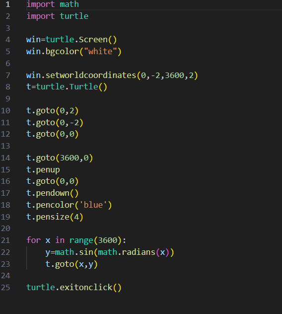
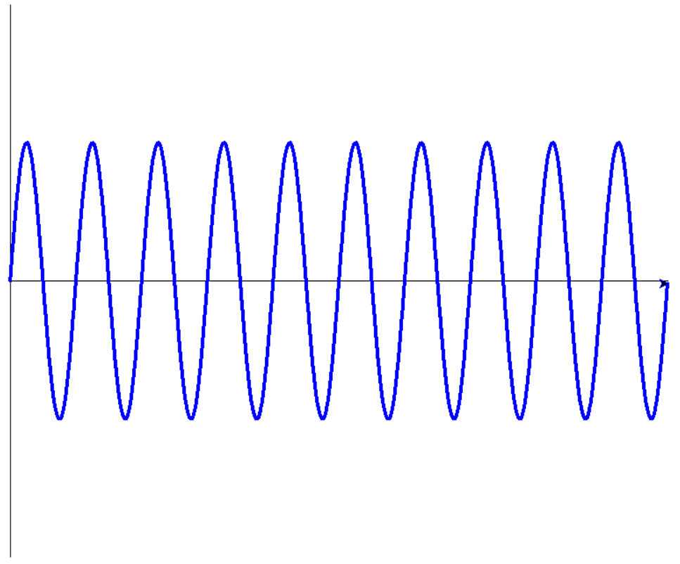

My class product proposal: Python Graphing Calculator
My class product proposal will use a combination of user inputs, math, and python turtle to create a rudimentary graphing calculator
my team members are: Josh Faulstroh, Cameron Hoying, Sebastian Jaculbe, Erick Hernandez, Johan Gonzalez, and Edward Rodriguez.
Some of the technical features will include a user input for the input of variables that will be used in basic graphical functions like sine, cosine, and tangent functions, which would be inputed through a GUI,
and will allow the user to view the function in the form of a graph.

